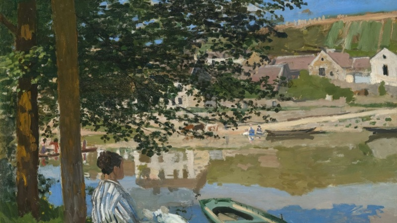

On lessons learned, in 10 years of service
Read more: On lessons learned, in 10 years of service (opens in a new tab)What it costs a woman to endure a world built by men, and what one learns without ever having a desk of one’s own.
Writing
Things observed, lived through, and turned over long after.

Read more: On lessons learned, in 10 years of service (opens in a new tab)What it costs a woman to endure a world built by men, and what one learns without ever having a desk of one’s own.
Read more: On writing, mid-life crises and career changes, and why you must listen to yourself (opens in a new tab)And I arrived at the conclusion that I should unplug from the world, write, and endeavour to be happy again.
Read more: Nature thrives without us, but will we? (opens in a new tab)Life, as they say, truly finds a way, even through the concrete slabs of a flyover.